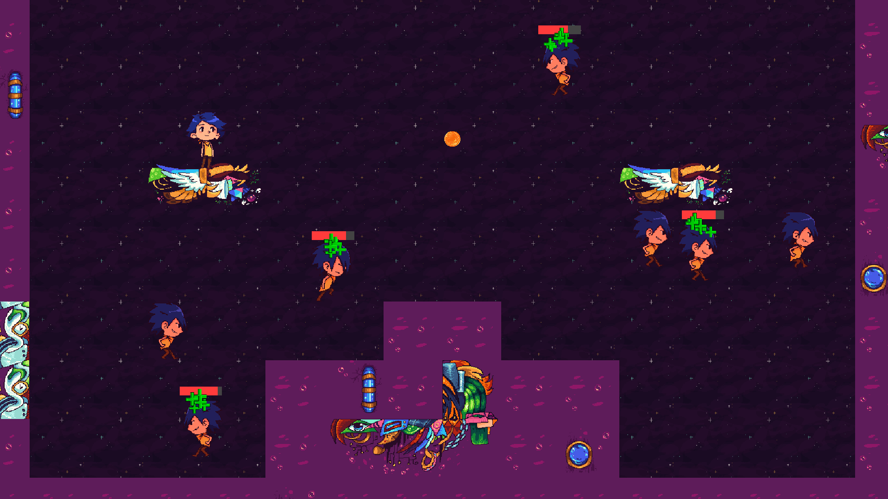
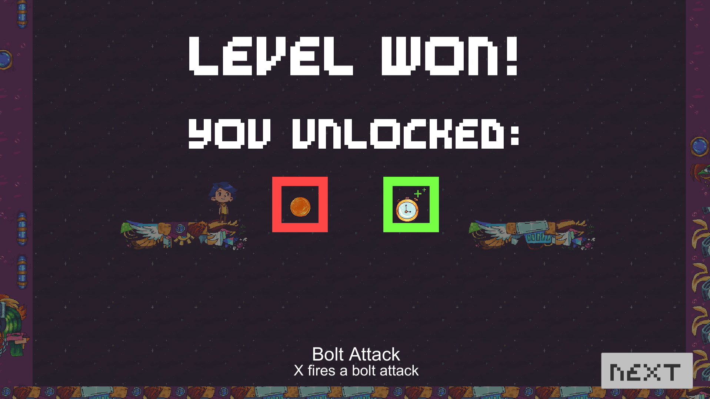
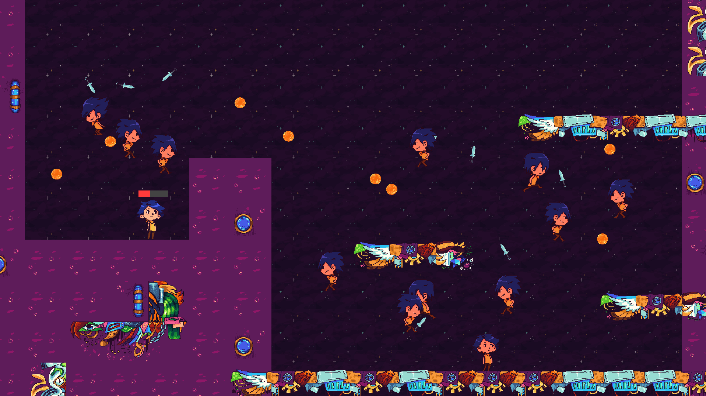

Clone Cleanup
- Team project, developed as entry to Game Maker's Toolkit 2019 Game Jam
- I was responsible with programming and design, working alongside an artist
- Developed in Unity
- Designed and developed an unique concept to match the jam theme "only one"
Our take on the theme started from Mark's suggestion when he announced it, of having only one sprite. Expanding that concept into the mechanics led us to Clone Cleanup: enemies not only use the same sprite, but the exact same abilities as you. Before heading into one of several levels, the player is presented with a choice of all unlocked upgrades thus far, followed by fighting clones using the same upgrades that were equipped. Winning a level unlocks yet more upgrades to play around with. I'm proud of the unique concept we came up with, which creates a lot of design space and interesting choices for the player. You may not want to equip a powerful upgrade as it will be used against them, and intentionally equipping debuffs is a good option.
The concept posed a few technical challenges. Each upgrade has their script, with a different activation script for the player and enemies. The double jump, for instance, is triggered by input on the player end and may randomly happen in mid-air for the enemies. The AI is simple, but effective, with basic movement and random use of the equipped upgrades.
  